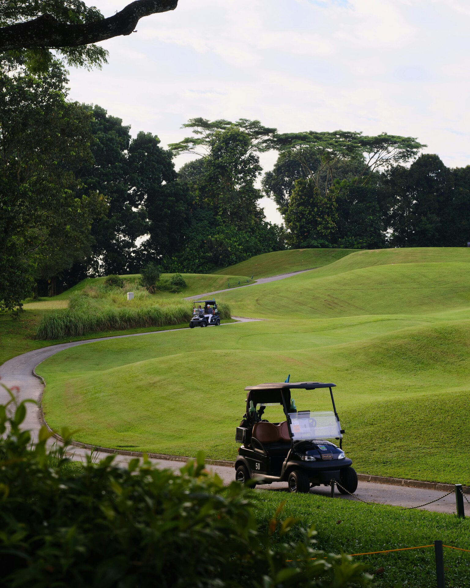
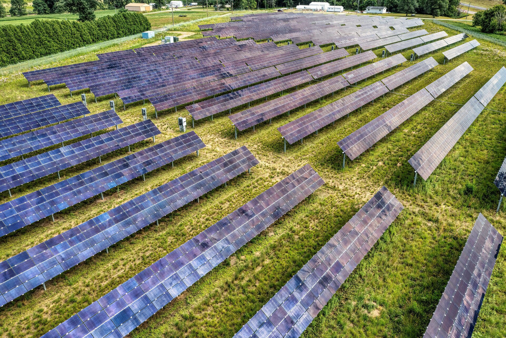
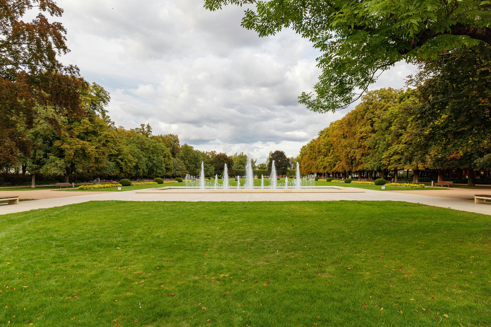
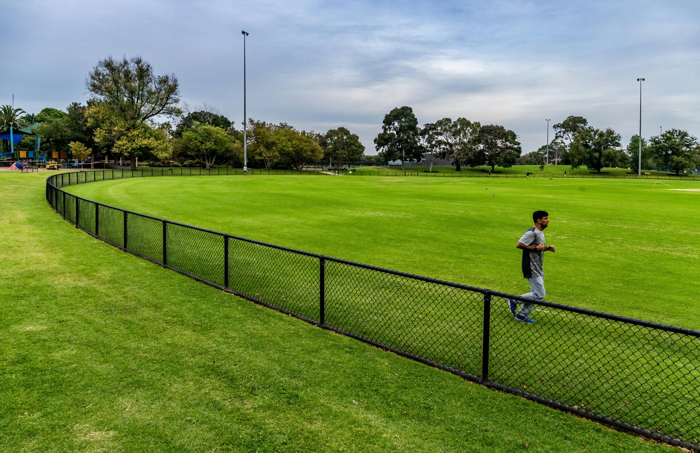
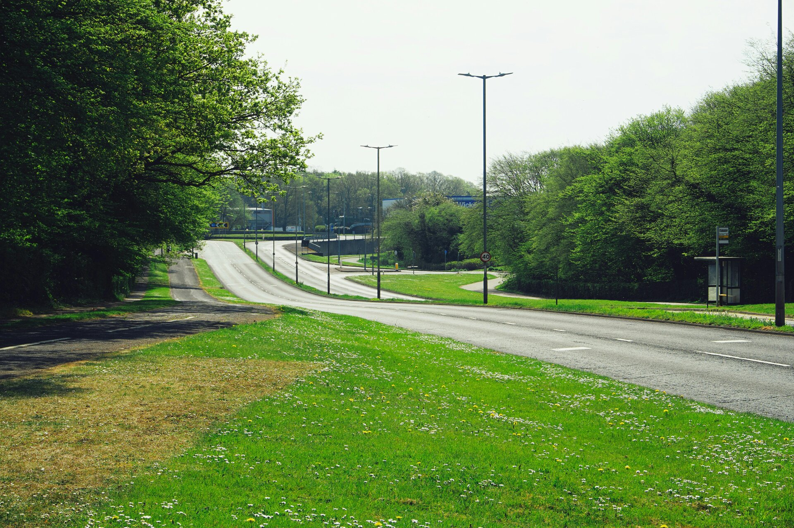
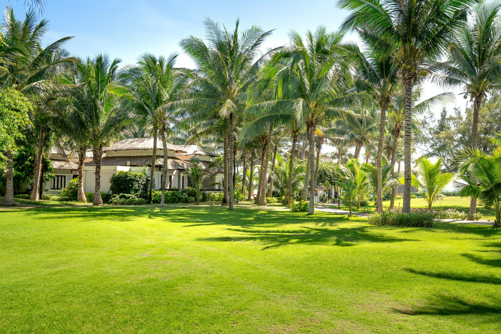

Autonomous mowing systems at commercial scale
RTK + LiDAR autonomous mowing systems for the sites that don't fit residential framing — councils, schools, resorts, golf courses, solar farms, orchards, equine properties and large estates beyond 10 acres. Equipment supply or fully-managed deployment, scoped per site.

Built for the hardest mowing jobs
The same RTK + LiDAR commercial-grade autonomous platforms AutoAcre installs on residential acreage scale up to handle institutional and commercial-vegetation-management sites. Single-unit specifications below; multi-unit deployments scale linearly via shared RTK base infrastructure.
Equipment supply or managed deployment
Equipment supply
Purchase the autonomous mowing system outright. AutoAcre handles delivery, professional installation, RTK base station commissioning, boundary mapping, exclusion zones and operator training. Per-call ongoing support is available where needed. Best fit for organisations with in-house grounds teams who want to keep operational control.
Managed deployment
AutoAcre owns and operates the unit on your site under a fixed monthly contract. Full fleet management, remote monitoring, scheduled maintenance, blade replacements, firmware updates and repair coordination. No capital outlay, no in-house expertise required, predictable monthly cost. Best fit for councils, schools and most institutional sites.
Three reasons commercial sites are switching
1. Operational consistency
A traditional commercial mowing crew visits weekly or fortnightly with ride-on equipment. The site looks freshly mowed for 3–4 days after each visit, then progressively rougher. Autonomous deployments operate 4–6 days per week per unit at 60dB, so the site holds at presentation standard continuously rather than alternating between fresh and overgrown. For resorts, schools, and council frontages where consistent appearance matters, the cadence advantage is the headline value.
2. WHS and risk profile
A ride-on operator on a slope is a workplace safety issue that institutional buyers are increasingly unwilling to carry. Autonomous units have no operator on the equipment, run at low forward speed, and use LiDAR plus collision sensors to handle obstacles. For councils, schools and any site with a serious WHS framework, removing operator-on-machine risk from grounds work is a meaningful shift — and quantifiable in insurance and compliance terms.
3. Budget predictability
Contract mowing pricing fluctuates with fuel, labour rates, and insurance. Multi-year contracts often include CPI-plus escalators that compound aggressively at scale. Managed deployment is a fixed monthly fee for the contract term; equipment purchase converts the operating cost into a depreciating asset with a known maintenance profile. For finance teams, predictable cost over a 5–10 year horizon is structurally easier to plan around.
From site assessment to operational deployment
Commercial deployment is more involved than a residential install — site complexity is higher, multi-unit coordination matters, and procurement processes for councils and schools require formal documentation. The shape of the deployment is consistent regardless of vertical.
Stage 1: Site assessment. An on-site visit to walk the property, identify mowing zones, plan RTK base station placement, assess slope and terrain, identify exclusion zones (water features, dense vegetation, slope sections beyond 38°), confirm cellular coverage for remote monitoring, and document any infrastructure needs (charging dock placement, shelter, mains power). For multi-unit deployments we scope shared base infrastructure during this stage. Output: a site plan and tailored proposal with fixed pricing.
Stage 2: Procurement and contracting. For council and school deployments this typically involves formal tender response or panel-supplier processes. For private commercial sites it's a standard purchase or service agreement. AutoAcre handles the documentation requirements common to institutional buyers — WHS plans, insurance certificates, deployment timelines, key personnel CVs.
Stage 3: Installation and commissioning. RTK base station mounted and initialised, autonomous units delivered and commissioned, boundary mapping walked across the entire site, exclusion zones configured, integration with site personnel completed. Multi-unit deployments take 1–3 days depending on site complexity; single-unit deployments are typically completed in a day.
Stage 4: Operation. For managed deployment, AutoAcre handles all operational complexity remotely with the on-site team having visibility into the schedule. For equipment supply, the site's grounds team takes operational ownership with handover training and ongoing per-call support available. First weeks include closer monitoring as the system beds in; after that the deployment runs on autopilot with quarterly reviews.
Where commercial autonomous mowing makes sense
Eight verticals AutoAcre serves under commercial scope. Each has its own dedicated page covering site-specific considerations, fit assessment and frequently asked questions.

Golf courses
Fairway and rough maintenance with programmable cut heights, pre-dawn operation that doesn't disrupt play.

Solar farms
Vegetation management between panel rows. Reduces fire risk and panel-strike events. Scales across fleet sites.

Parks & reserves
Consistent grounds without crew scheduling. Quiet enough to operate while the park is in use; safe around the public.

Schools & universities
Oval and grounds maintenance after hours and on weekends. No WHS risk from operators on site during school hours.

Council grounds
Road verges, roundabouts, median strips, sports fields. Fleet-scalable to replace a contracted crew rotation.

Resorts & hotels
Immaculate grounds without noisy mowing crews disturbing guests. Operates pre-dawn before check-out.
Orchards
Inter-row autonomous mowing for macadamia, avocado, blueberry, tea tree and coffee. Frequent shallow cadence built for the planting standards growers already use.

Equine properties
Rotational rest-paddock topping for commercial-scale horse properties. Sward held at a steady 10–15 cm — built for the rotation pattern equine properties already run.
Replace a mowing crew with autonomous infrastructure
For organisations spending $80,000–$150,000 per year on contracted mowing across institutional grounds, the autonomous deployment model delivers comparable or better results at a fraction of the ongoing cost — with safety and consistency advantages that are harder to put a number on but matter operationally.
- Eliminate fuel, equipment maintenance, and operator labour costs
- Consistent daily operation rather than periodic crew visits
- Zero direct emissions — fully electric drive
- Reduced WHS risk — no operators on mowing equipment
- Noise reduction — operates at conversation level (~60dB)
- Slope handling to 38° clears terrain ride-on contractors refuse
Council, school and tender processes
Institutional procurement is structurally different from a private commercial sale, and AutoAcre's deployments are scoped to fit. For councils and schools the typical flow involves either a panel-supplier listing, a request-for-quote process, or a formal tender — all of which require documentation, insurance evidence, WHS plans, and key-personnel detail beyond what a private commercial sale would.
AutoAcre handles the documentation side as part of the engagement. Standard deliverables include site-specific WHS risk assessments, public liability and product liability insurance certificates, equipment specifications and Australian compliance certifications, deployment timelines mapped to the buyer's procurement schedule, and named accountable personnel for the project. For complex council deployments — multi-site, multi-year, fleet-scale — we work with the buyer's procurement team to fit the standard contract framework.
The substantive technical due diligence usually focuses on three areas: how the system handles edge cases the buyer's existing crew would catch (children running onto a school oval, a member of the public on a council reserve, a pet on a resort lawn); how operational responsibility is divided between AutoAcre and the buyer's on-site team; and how the system holds up under conditions specific to the site (coastal corrosion, dust loading at airports, wildlife presence in regional parks). All three are answered in the site-assessment and proposal stage.
Most institutional buyers also want to see a reference deployment before committing. Through 2026 and into early 2027, AutoAcre is building the reference list — early-deployment commitments now have first call on the most favourable terms when service operations begin.